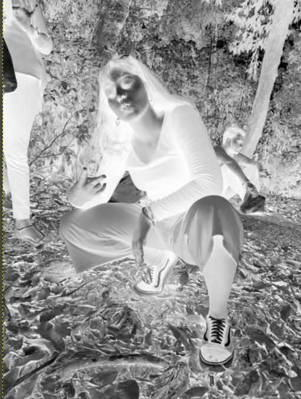
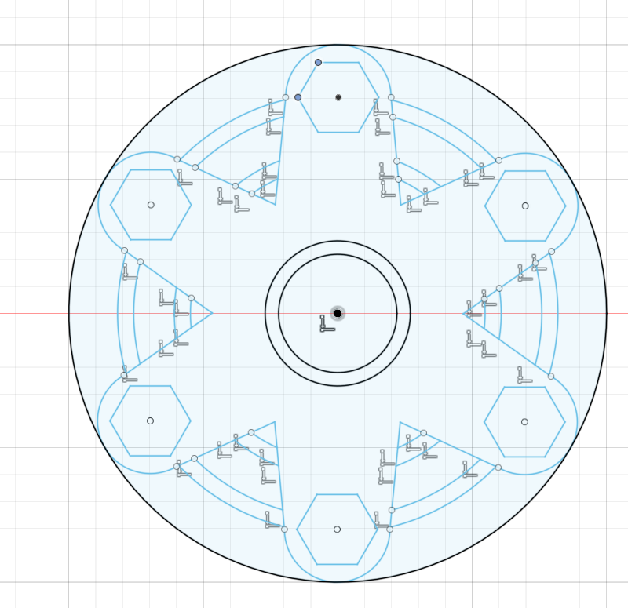
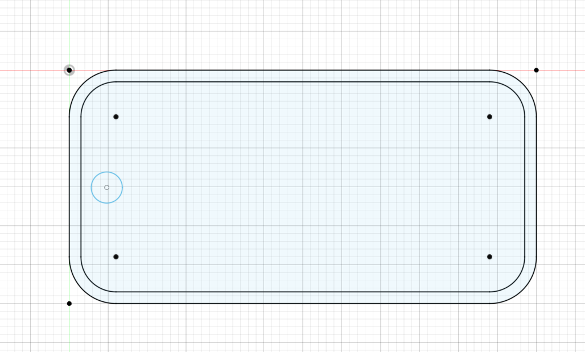
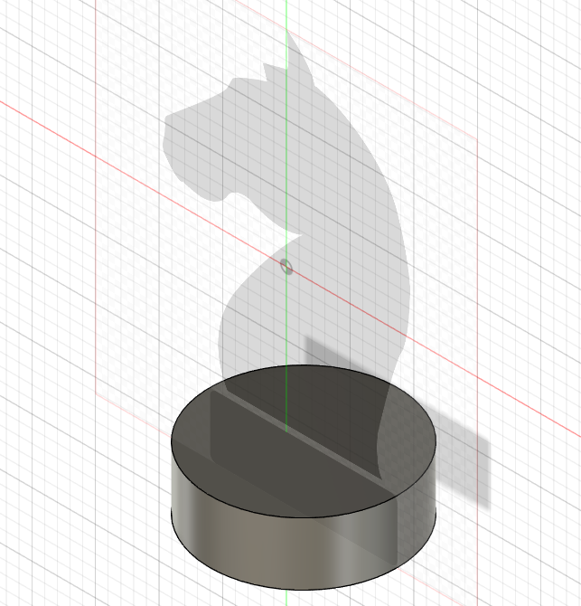
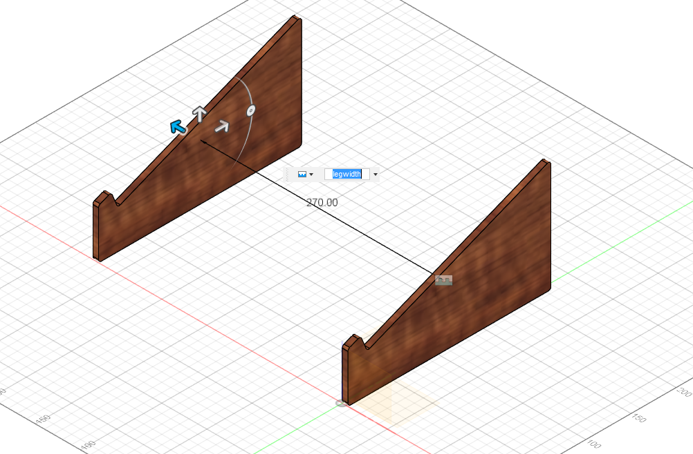
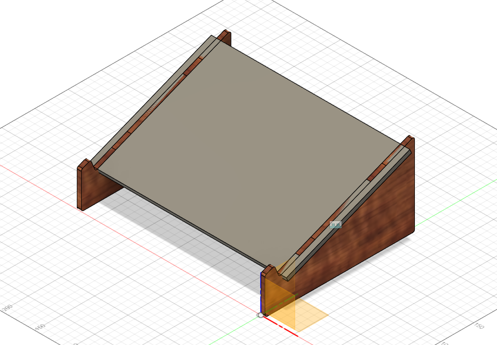

Computer Aided Design
Computer Graphic (11 May)
Computer graphics is sub-divided into 2 categories. Raster Images and also Vector Images.
- Raster Images
- deal with pixels on the screen. It is used mainly for rendering images (e.g. Photographs). Images are represented by “dots” or “pixels” in a set resolution (number of dots/pixels per inch).
- Characterised by becoming fuzzy as you zoom/enlarge the image. As the image is represented by dots, as you enlarge the image the dots become bigger.
- Mainly used for photographs and image representation.
- Important resoultions (measured as dpi (dots per inch)), the higher the amount of memory required to store the image.
- 72 dpi Applie/Mac screen resolution
- 96 dpi Windows screen resolution
- 300 dpi min Printer resolution
- Common raster file formats include - jpg/jpeg (Joint Photographic Experts Group) OR png (Portable Network Graphics)
- Some softwares you can look into inlcudes:
- Vector Images
- Uses mathematical functions or algorithms to display images on the screen. e.g. a line is represented by two points and an equation to draw the line between points.
- Characterised by clean lines/edges and the ability to zoom in/out as much as you want without distortion, as each image is “drawn” using an algorithm.
- Great for logos, signs, fancy text and design files.
- As such, you require specific software to handle each image type, and some are proprietary, though some standards exist.
- Common vector file formats include - dxf (AutoCAD Drawing Exchange Format) OR svg (Scalable Vector Graphics) OR STEP (STEP. ISO 10303 for 3D Objects)
- Some softwares you can look into inlcudes:
This week, we were also introduced to Gimp, a free raster graphic editing software, similar to that of Adobe Photoshop.We were told to pick any picture and to remove and change its background. Here is how I did it.
Gimp
Photo Reference:

I first start off by right clicking the image and click on Add Alpha Channel. Once that is done, i want to duplicate the image. After that what i did was i desaturate the image and invert the colours of the top layer, making it look like this:

Once that is done, i then take the paintbrush tool to paint the unwanted background with the colour black and my subject with the colour white as such.

After that I cut the image, press on the original layer and add a layer mask, with white (full opacity) selected. Once that is done i went ahead and pasted my image previously. I then anchored the floating layer so that it will anchor it down to the original layer. Last but not least all i did was just drag the new background image to the layers tab, changing the background. I obviously resize it accordingly to produce the final product below.

Autodesk Fusion 360
For this lesson we were also introduced to Fusion 360, an Integrated CAD, CAM, and CAE software. You can consolidate your product development process. Unify design, engineering, electronics, and manufacturing into a single platform.
It is similar to AutoCAD or Inventor. However this program is free for educational use, provided you sign up (using your email) as a registered student of Singapore Polytechnic. It is easy to learn and master as there are alot of tutorials online even from Autodesk itself.
We were given our first assignments to get used to the software. Here is my documentation on it:
Exercise 1Exercise 2
Exercise 3
Once we were more comfortable with the software, we were given another assignment on the 15th of May, which was to design our own Fidget Spinner and our own Keyring Nametag
Fidget Spinner
The process of making our own fidget spinner was quite straight forward.The specifications of the design is:
- We are provided with a ABEC 608 Bearing dimensions 8 x 22 x 7 mm for the rotation device and M8 Stainless Steel hex nuts as counter-weights.
- The radius of the fidget spinner should not exceed 50mm (40mm if you have small hands!) otherwise we will not be able to spin it.
- The maximum thickness of your fidget spinner 8 mm to accommodate the bearing and the M8 nuts.
I first started by creating a 50mm diameter circle as a maxmimum marking for my spinner.I then designed the arm of the spinner according to the dimensions given and added the hexagon to house the nut and the circle in the middle to house the bearing. I then used the circular feature to duplicate the arms evenly. I decided to go for 6 arms. The final thing i did, sketch-wise, was just a random ciruclar ring for design sake.
Once that is done, I extrude each side by 4mm since the maximum thickness is 8mm. I lastly used a fillet to fillet the corners. Below is my finished product.

Keyring Nametag
For my next assingment, we were told to design our own keyring or keychain.
- Just like before, i started with a sketch of my design. I started with a rectangle shape with the length of 60mm and width of 30mm.
- I then used the fillet tool on each corner with the radius of 6mm.
- After that i did an offset of 1.5mm.
- Lastly I created a circle about 5mm from the middle of the rectangle.
Once done it should look like this.
Once that is done,
- I went ahead and extruded the edges by 3.5mm and the inside by 2mm, excluding the circle so as to create the hole to fit the keyring.
- Once that is done, I did a chamfer of 3mm on the hole so as to allow the keyring to fit easily to the hole.
- After that, all that is left was to add a text of my name (and also a few extra quotes to make it look nicer), which i then extruded to the same height as the outer edges.
Below is my final product:

3D Modelling (18 May)
For this lesson, we were taught the different techniques on 3D modelling such as revolution, lofting and sculpting. We were then tasked to design our own Knight Chess Piece with reference. Here is my documentation on how i did it:
Knight Chess Piece
To start things off, i first find an image of the chess piece from google as a reference or canvas to aid in the creation of the design. Once that is done, i went on ahead on Fusion 360, and clicked on Insert>Canvas. I then browsed my computer for the downloaded image of my knight piece. Once that is done i Calibrated the image so that its length will be 30mm which is the maximum length according to the specifications. Once that is done, i then started tracing half of the base of the piece, followed by a revolve against the middle point construction line which is the axis of the revolve.
Next, i just sketched out the body of the piece as accurately as possible with the combination of line and circle tool to help with the curved edges.

I then ended it off by an extrusion of 1.5mm on both sides. My final product is shown below:

My Knight Piece
Fusion 360 Features (22 May)
For this lesson, we were taught on different Fusion 360 features. One particular one is called Parametric Modelling.
Parametric Modelling
This feature allows you to define your drawings/sketches using variables. This feature can be found at Modify > Change Parameters.
- The workflow is as follows:
- Draw your sketch
- Use Modify > Change Parameters to define variables for the dimensions
- Apply the variables to the dimensions
- Should you change your paramters, the sketch/object changes.
- In the parameters box you define:
- the name of the parameter
- the type of the parameter e.g. mm
- a value (which can be changed)
- a comment to identify the parameter created
You will be able to see how i implemented this feature with the assignment given to me which is to make my own laptop stand.
Laptop Stand
Leg Component
I first start by creating a new component and renamed it to Leg. Then i start my skecth on the right side of the origin and turn on the origin tab. i then draw the design with the appropriate dimensions as seen below.

Click to enlarge
Now is where i set all the different parameters. As mentioned previously, to get the parameters tab it is just Modify > Change Parameters. The purpose of doing this is so that i can change the different measurements easily rather than having to manually change the measuremunts of the sketch one by one. Once that is done, i went on ahead and created new parameters
- Firstly, i created a parameter t which is for the thickness of the leg. I changed the unit to inches(in) and the Expression to 0.25
- Secondly, i creater a parameter legWidth, with the Expression being 270mm.
{kind=link}
Click to enlarge
Once that is done, I went ahead and extruded it by the parameter t. I also went ahead to fillet all the edges after extruding it. For this design we are going to need two legs so i went ahead and right click the Leg tab and copied it. I then right clicked anywhere on the screen and paste it. Once done, i went ahead and pressed Assemble > Joint. I then click on both surfaces of the leg, before changing the Offset Z to our legWidth parameter. It should appear like this:
{kind=link}
Click to enlarge
Top Of Laptop Stand
Now that the leg is more or less done, i moved on to work on the top of the stand. I did the same thing as i did for the legs which was to create a new component and renamed it to Top.I then created a sketch on the slant part of the leg. Then i went Create > Project / Include > Project or simply just press the P key, and click on the left and right slant. once done i drew a rectangle and dimensioned it accordingly. I also extruded downwards by -t as seen below:


{kind=link}
Click to enlarge
As you can see from the photo above, there are some interference between the top plate and the legs. In order to fix that, go to Modify > Combine, the Target Body is the leg while the Tool Bodies is the plate. Make sure that the Operation is on Cut and Keep Tools is on.By doing that, it will remove the interference. I then filleted the edges for safety purposes. I can then edit the different measurements through the parameters menu.

Click to enlarge
Our stand is basically almost done. However, if we were to put this together, it would be all wobbly as there is no support. So, for the next step, i will be adding leg supports. The way i do so is by again adding in a new Component and calling it Support, just so it is easier to navigate if i need to edit anything. Next, i did an offset plane on one of the back of the legs. i offset it by -45mm and extended so that it covers the other leg, as seen below.

Click to enlarge
Once that is done, i then went ahead and created a new sketch on that plane. What i want to do now is see the inner section of the two legs. I can do that by going to Sketch (or Create) > Project / Include > Intersect. For the Selection Filter, i selected bodies, and then i selected the two legs. Once that is done i drew a rectangle and constrained and dimensioned accordingly.Then final process for the sketch is to just draw a line in the middle of the rectangle which is to help us model in a tab that can be fixed on the leg. The final product should look like so.

Click to enlarge
After doing so, i selected the appropriate sketch profiles that i want to extrude. I then Extrude it by t / 2, Symmetric. You should then see the support. I then decide to create another support, so i decided to mirror it. To do so, i went to Construct > Midplane and selected the front and back face of the legs. This should then produce a plane that is located at the middle of the legs, which acts as a reference point to help us mirror our support later on. I then went to Sketch (OR Create) > Mirror and select Bodies for the pattern type. For the Objects, I selected the support and for the Mirror Plane, I selected the Midplane from before. This then should create another support. Now, i decided that i wanted to round of the edged of the support but am too lazy to click every single edge of the support. I can however ease this process by using the parametric timeline which is located at the bottom left of our screen. What i want to do now is step back one step before the mirror feature, and fillet the edges. Once that is that, i can then use the timeline feature and step forward again. This basically eases our job and allows the mirrored support to be filleted as well. Once all that is done, the final product should look like so.

Click to enlarge
However, if you return back to the top level(right click the top tab and click Activate), you will notice that your support and legs will have interference as you have not subtracted materials. To fix that u simply subtract it again by going to Modify > Combine, the Target Body is the leg while the Tool Bodies is both the support. Make sure that the Operation is on Cut and Keep Tools is on. To check that the operation is done properly, you can simply just hide the support by pressing the eye icon on the left side. You should be able to see tabs. I then just did a fillet on the leg component. Once that is done, the only thing left to do is just resize it according to the size of my laptop through Parameters and boom, its done.

Click to enlarge
Laptop Stand File